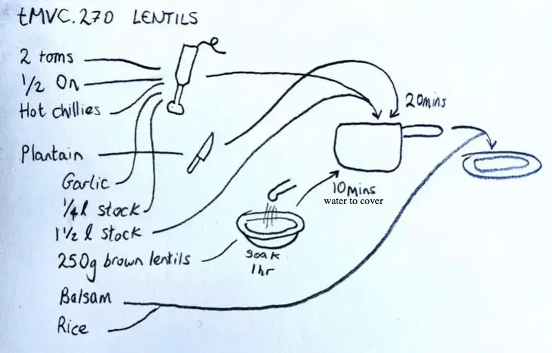

⇦
⇦
2025-04-23 (and onwards)
top
Double everything
{book}.{page}
tGVC = the Greek Vegetarian CookbooktMVC = the Mexican Vegetarian CookbookLFV = Leon: Fast VegetarianVLi15 = Joe Wicks: Veggie Lean in 15JO = Jamie OliverLHOPV = Leon Happy One Pot VegetarianPl = Yotam Ottolenghi - Plenty